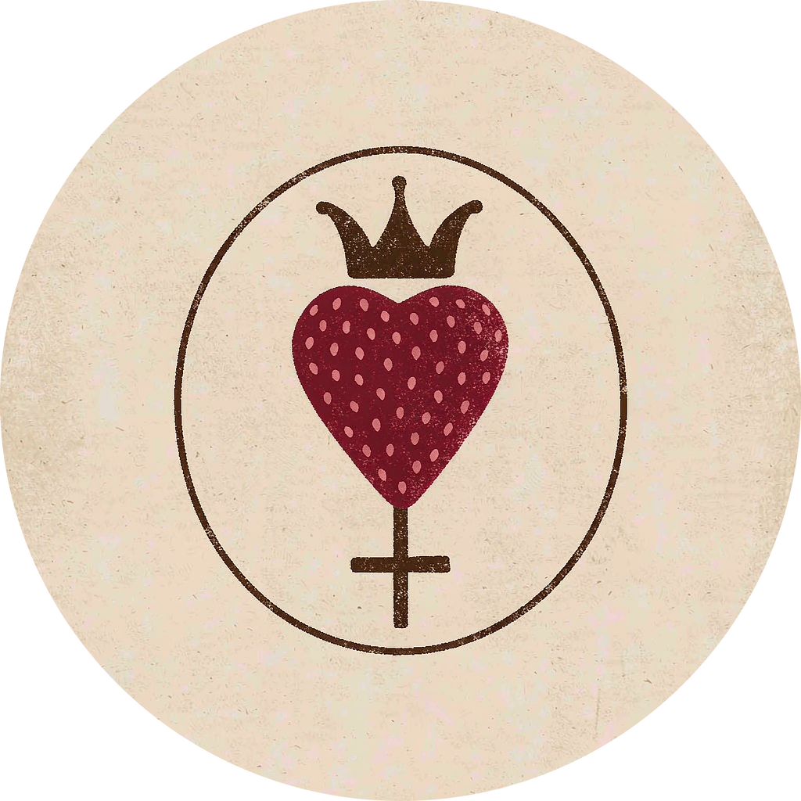

当爱情开始承担整个社会的重量
当亲情、友情、陪伴与归属感逐渐集中到伴侣身上，我们是不是正在让爱情替整个社会关系网络买单？

Strawberry Breath草莓味口气THE ARCHIVE
正在统计文章内容…
这里收录所有已经发表的文章，按发表时间由新到旧排列。首页只展示最新三篇，完整内容可以在这里继续浏览。
当亲情、友情、陪伴与归属感逐渐集中到伴侣身上，我们是不是正在让爱情替整个社会关系网络买单？
从价值认同、家庭经济逻辑与代际创伤出发，思考重男轻女如何在家庭中延续，以及女性如何打破偏见的循环。
从日常表达的泛化出发，思考语言如何影响情绪识别、阅读、教育与社会文化生活。
从一句善意的夸奖、青春期的叛逆，到康德关于自律与自由的思想，重新思考我们为什么行动，以及如何拿回选择生活的主动权。
从陈奕迅《葡萄成熟时》出发，聊聊等待、付出、遗憾、爱情的成熟，以及不必按照别人的时间表生活。
重新读《红楼梦》，从大观园里的女性情谊、才情与志向，看见她们被家族和时代限制的人生。
从烟盒上的山河符号、被浪漫化的吸烟镜头，到女性与未成年人承受的二手烟，讨论烟草包装、公共空间与控烟责任。
重读高中语文课本里的《诗经·氓》，从两千多年前一位女子的爱情经历，重新理解亲密关系中的付出、失望与转身。
从欧洲猎巫运动与《醋汤姆》出发，重新理解女巫符号背后的女性历史，以及当代社会对女性的规训。
从《Enola Holmes》出发，聊聊女性主体性、自我选择，以及社会期待如何影响一个人的人生。
没有找到匹配的文章，试试其他关键词。